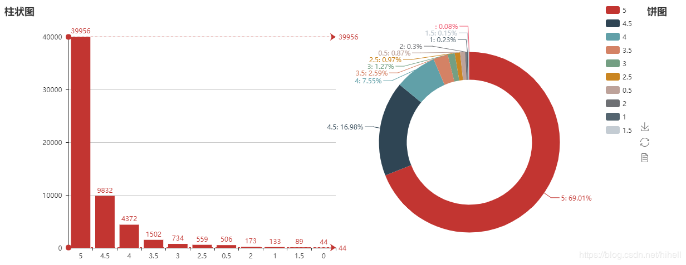

原文连接:https://www.cnblogs.com/happymeng/p/10640338.html
写在前面
用Python加上一些数据分析，来证明《海王》好看。
《海王》一部电影带你重温《驯龙高手》《变形金刚》《星球大战》《星河战队》《铁血战士》《安德的游戏》《异形》可能还借鉴了对手的《钢铁侠》与《黑豹》剧情，再稍稍带一点《大鱼海棠》的味道，配上一丢丢温子仁式恐怖片套路，优秀的商业片，应该是DC年度最佳了。温子仁，优秀的集大成者。
在做数据分析之前，我们需要先对数据做清洗，将数据处理到最佳
读取数据,读取数据的时候记住，需要把header=None然后增加names
# 读取数据
def get_data():
df = pd.read_csv("haiwang.csv",sep=",",header=None,names=["nickName","cityName","content","approve","reply","startTime","avatarurl","score"],encoding="utf-8")
return df清洗数据
- 查看数据是否有重复，采用
drop_duplicates删除数据
- 删除数据之后，需要重置索引
reset_index - 处理时间字段为
datetime类型 - 增加一个字段为
content_length查阅用户评论数量
# 清洗数据
def clean_data():
df = get_data()
has_copy = any(df.duplicated())
data_duplicated = df.duplicated().value_counts()
#print(data_duplicated) # 查看有多少数据是重复的
data = df.drop_duplicates(keep="first") # 删掉重复值
data = data.reset_index(drop=True) # 重置索引
data["startTime"] = pd.to_datetime(data["startTime"])
data["content_length"] = data["content"].apply(len)
# print(data.isnull().any()) 判断空值
# print(data[data.isnull().values == True])
# print(data[data.nickName=="."])
return data数据基本情况查看
查看所有数据情况
点赞的最高数目是2783 非常高了，但是平均值才0.25 可见，猫眼上人们并不是很喜欢点赞
回复数最高的才43 可以说非常低了~
《海王》50%以上的人给了5分，肯定是很好看了~
看一下点赞最高的一些数据
幻影XL 获得了最多的点赞，可以看一下他的评论内容。恩，写的确实不错~，夸了一下导演，这个地方出现一点小的疏漏，我看到猫眼点赞最高的，我竟然没有抓取到数据，应该是给遗漏掉了，疏忽啊！
点赞排名
回复排名
# 查看数据基本情况
def analysis1():
data = clean_data()
print(data.describe())
# 删除.
# need_delete = data[data["nickName"]=="."]
data = data[~(data['nickName']==".")]
# data = data[~data['nickName'].isin(["."])]
# data.drop(need_delete,axis=1,inplace=True)
print(data["nickName"].describe())
print(data["cityName"].describe())查看nickName的描述，发现竟然有个. 需要把数据过滤掉，观影此处最多的城市是北京
去除 . 数据的办法是 data = data[~(data['nickName']==".")]
count 57838
unique 55934
top qzuser
freq 57
Name: nickName, dtype: object
看一下qzuser这个人发了57条都是啥？
这位老铁还真的发了很多唉，一个劲的夸这个电影，O(∩_∩)O哈哈~
看评分
5分遥遥领先，周末的票已经买好，准备去看啦~

图表的实现用的是pychats，官方文档在
http://pyecharts.org/#/zh-cn/prepare
你可以去查阅文档，看一下详细的参数设置
# 分析打分score情况
def analysis2():
data = clean_data()
grouped = data.groupby(by="score")["nickName"].size()
grouped = grouped.sort_values(ascending=False)
index = grouped.index
values = grouped.values
# 柱状图
bar = Bar("柱状图",title_pos="left",width=240)
bar.add("",index,values,is_label_show=True,is_legend_show=True,mark_line=["min","max"])
# Pie图
pie = Pie("饼图",title_pos="right",width=240)
pie.add("",index,values,radius=[45,65],center=[70,50],is_label_show=True,legend_pos="90%",legend_orient= "vertical")
grid = Grid(page_title="《海王》评分详情",width=1200,height=500)
grid.add(bar,grid_right="50%")
grid.add(pie, grid_left="70%")
grid.render("html/score.html")
print(data)
print(data[data["score"]==0])
看评语
def analysis3():
data = clean_data()
sort_data = data.sort_values(by="content_length",ascending=False)
print(sort_data.head(10)["content"])
节选几个，可以看看，顺便我还可以学习一下语文
剧情和特效在科幻片中的精彩佳作。剧情延续着海神波塞冬用的玄铁打造的三叉戟铺开，影片中的海王的身世让力量成为了传奇，他有其它亚特兰蒂斯人不具备的亚特兰王的能力。海王在漫画中和其他很多英雄不一样的是，他并不反感杀戮，甚至有些渴望鲜血，这使得他在外型和性格上很难讨喜。温子仁对海王的性格做了一定程度上的改编，弱化了他的残忍，突出了他自卑的性格。整部《海王》表面看上去是一场王位争夺战，实际是亚瑟战胜自卑的成长史，而获得三叉戟就是他性格极为重要的转折点。
"温子仁真的厉害，在这部电影的镜头上和音效上真的是下了功夫，影片中适时响起的音效结合画面，很加分，影片大的方向来看是一部英雄成长史，有主角的披荆斩棘也有活泼温情, 擅长拍恐怖惊悚题材的他，在有些镜头的处理上能读到惊悚的味道，用最擅长的恐怖元素牢牢把握住观众的注意力，但点到为止没破坏电影的整体氛围，度把握的很不错 ，DC这次请温子仁操刀算是做对了一件事，而且海底世界的特效也相当给力，故事剧情上有几个点的设计很灵性，我觉得比毒液好看，因为毒液前面杀人的惊悚画面吓到我了，当然这部电影不是没有缺点，比如有几个地方我觉得节奏进程过快，剧情套路容易被猜中等等，但毕竟放眼整部影片来看，我给出四个字——瑕不掩瑜"
特效还可以的啦，但是剧情真的细碎，就本人而言槽点满满，起因在于海网的母亲因为生下海王而死，也没在海王小时候就派人弄死他，之后奥姆因为陆地人伏击他们决定发起战争（也有可能是奥姆的阴谋，但是海底人被各种残害是事实）结果眉拉，作为奥姆的青梅竹马就背叛奥姆了，就去找海王了，也不知道怎么一牵手，一拥抱，就擦起了爱情的火花（很多人说女主超级美，我看到了寡姐的影子，一头红发，犀利的眼神，个人感觉像寡姐的山寨）然后海王就找到了三叉戟，开启了主角光环之嘴炮无敌，拿到三叉戟，噼里啪啦的先弄死一堆海族人，然后成了海族人的王，奥姆被绿了，王位被抢。海王还说我是海洋的领主，你怕不是翻译官的头头。海族人也凄惨，打不过啊。
先说优点特效很足！特效很足！特效很足！剧情全程没有挖坑。但是不知道为什么！看得不过瘾感觉就跟一般，男女主角爱得莫名其妙，感觉亚特兰蒂斯的女人都有一个特点：喜欢陆地上的男人，不喜欢本土的。挺同情海里的男人的，自己未婚妻和陆地上的男人跑了，还生了个儿子。把老婆抢回来后不是宠爱，而是生完孩子女儿后，拿去祭献给丑陋的退化的海怪？？？女儿长大后上陆地又爱上了同母异父的哥哥？？？背叛得莫名其妙。最后男主拿到了自己的武器不是因为自己有多勇敢多牛逼，而是因为男主能和海里的动物对话？？？那我倒是奇怪了海里的动物怎么听得懂英语。离题了就回来，有点钻牛角尖了。要我说海神三叉戟就是个大型信号扩散器，帮助扩散命令罢了。
看一下评论时间
对于《海王》我只获取了4天的数据，看一下大家都在什么时间进行评论吧，晚上10点以后写评论的比较多，估计是大家看完电影，回家没啥事情才开始写评论吧~~

def analysis4():
data = clean_data()
# 获取时间
# 添加小时
data["hour"] = data["startTime"].dt.hour
data["startTime"] = data["startTime"].dt.date
need_date = data[["startTime","hour"]]
def get_hour_size(data):
hour_data = data.groupby(by="hour")["hour"].size().reset_index(name="count")
return hour_data
data = need_date.groupby(by="startTime").apply(get_hour_size)
data_reshape = data.pivot_table(index="startTime",columns="hour",values="count")
bar = Bar("分时评论分析",width =1200,height=600,title_pos ="center")
data_reshape.fillna(0,inplace=True)
print(data_reshape)
for index,row in data_reshape.T.iterrows():
print(data_reshape.index)
v1 = list(row.values)
bar.add(str(index)+"时",row.index,v1,is_legend_show=True,legend_pos="80%",legend_text_size=8)
bar.render("html/1.html")粉丝分布
# 处理地名数据，解决坐标文件中找不到地名的问题
def handle(cities):
# 获取坐标文件中所有地名
data = None
with open(
'city_coordinates.json文件地址',
mode='r', encoding='utf-8') as f:
data = json.loads(f.read()) # 将str转换为json
# 循环判断处理
data_new = data.copy() # 拷贝所有地名数据
for city in set(cities): # 使用set去重
# 处理地名为空的数据
if city == '':
while city in cities:
cities.remove(city)
count = 0
for k in data.keys():
count += 1
if k == city:
break
if k.startswith(city):
# print(k, city)
data_new[city] = data[k]
break
if k.startswith(city[0:-1]) and len(city) >= 3:
data_new[city] = data[k]
break
# 处理不存在的地名
if count == len(data):
while city in cities:
cities.remove(city)
# 写入覆盖坐标文件
with open(
'city_coordinates.json文件地址',
mode='w', encoding='utf-8') as f:
f.write(json.dumps(data_new, ensure_ascii=False)) # 将json转换为str
def analysis6():
data = clean_data()
cities = list(data[~data["cityName"].isnull()]["cityName"].values)
handle(cities)
style = Style(
title_color='#fff',
title_pos='center',
width=1200,
height=600,
background_color='#404a59'
)
new_cities = Counter(cities).most_common()
geo = Geo("《海王》粉丝分布","数据来源：CSDN-梦想橡皮擦",**style.init_style)
attr, value = geo.cast(new_cities)
geo.add('', attr, value, visual_range=[0, 3500],visual_text_color='#fff', symbol_size=15,is_visualmap=True, is_piecewise=True, visual_split_number=10)
geo.render('粉丝位置分布-GEO.html')词云图
import jieba.analyse
def analysis7():
data = clean_data()
contents = list(data["content"].values)
try:
jieba.analyse.set_stop_words('stopwords.txt')
tags = jieba.analyse.extract_tags(str(contents), topK=100, withWeight=True)
name = []
value = []
for v, n in tags:
# 权重是小数，为了凑整，乘了一万
name.append( v)
value.append( int(n * 10000))
wordcloud = WordCloud(width=1300, height=620)
wordcloud.add("", name, value, word_size_range=[20, 100])
wordcloud.render()
except:
print("错误")
全是好评啊，特效好看，剧情好看，全程无尿点，DC,海王，温子仁，女主。
本周末电影院走起。
源码关注微信公众号：回复海王领取